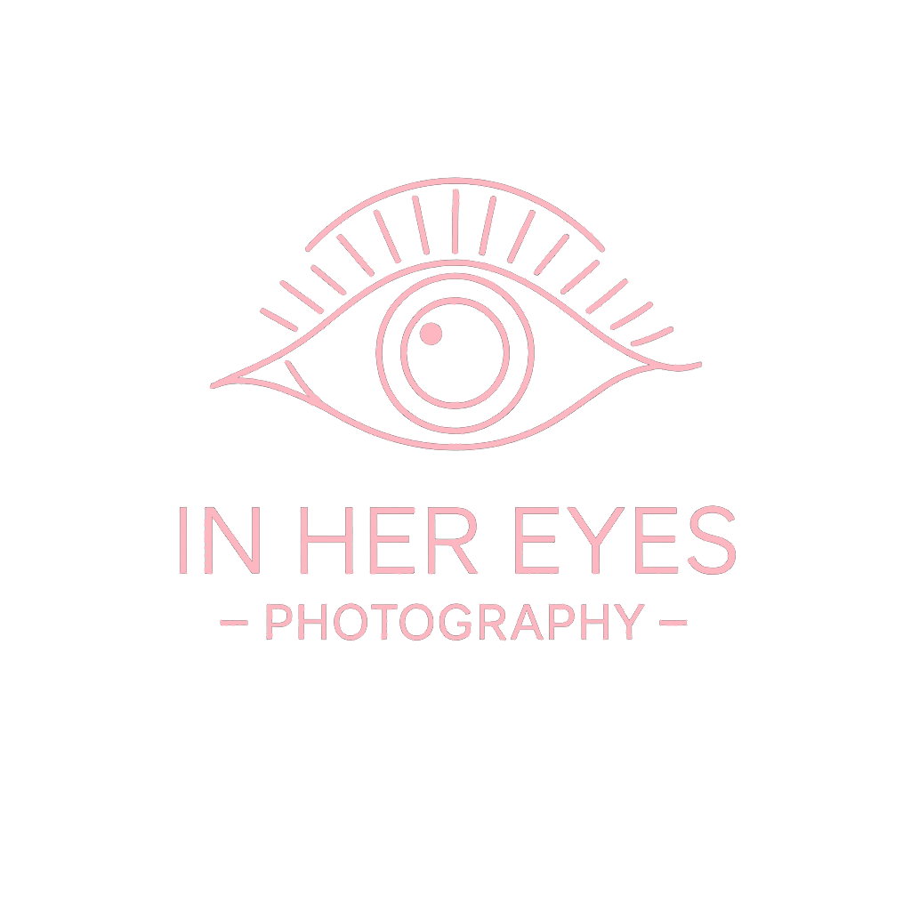
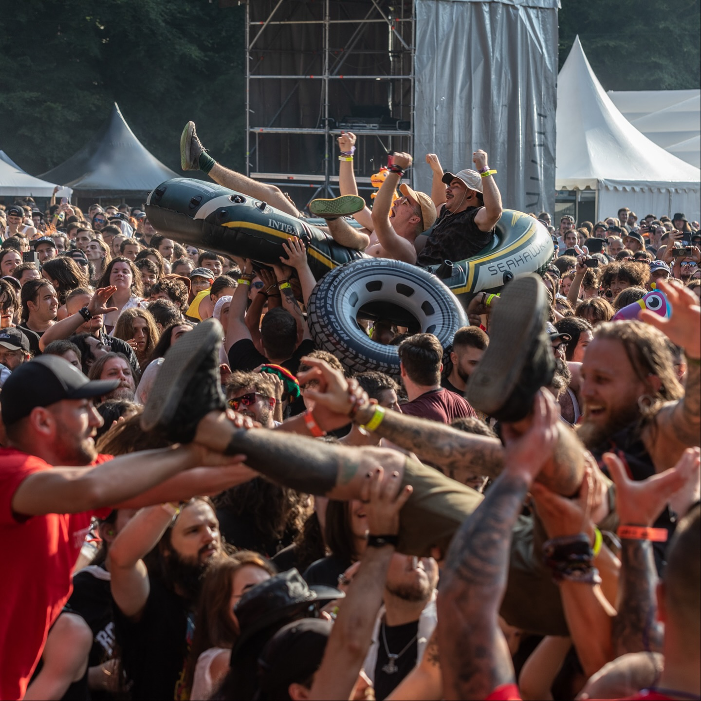

In Her Eyes-Photography
Dacă ai biletul în buzunar și entuziasmul la cote maxime, e timpul să vorbim despre realitatea celor 5 zile la Ghimbav. Rockstadt Extreme Fest nu este doar un maraton de headbanging, ci un test de anduranță. Ca să nu fii victima oboselii după primele două zile, iată un mic ghid de supraviețuire pentru ediția 2026.
Știm, vrei să porți tricoul cu trupa preferată, dar la poalele munților vremea este cel mai imprevizibil artist.
Straturi, straturi, straturi: Ziua pot fi 30°C, dar noaptea, în timp ce trupele fac show, temperatura scade brusc. O geacă de ploaie ușoară (sau o pelerină) e sfântă.
Încălțămintea e cheia: Nu e sub nicio formă momentul pentru bocanci noi-nouți, scoși din cutie. Mai bine alegi acei vechi prieteni pe care îi tot porți zilnic de 10 ani încoace... rupți, jerpeliți și trecuți prin toate noroaiele posibile. Ei sunt singurii care îți garantează că nu vei termina festivalul cu picioarele bandajate. La Rockstadt, talpa uzată și pielea tocită sunt semne de onoare, nu defecte.
La un festival extreme, tentația este să uitați de apă în favoarea berii. Totuși, soarele de iulie la Ghimbav poate fi necruțător. Profită de punctele de hidratare și nu uita: pentru fiecare pahar de alcool, bea unul de apă. Corpul tău îți va mulțumi în ziua a cincea, când vei mai avea energie pentru moshpit.
Rockstadt a crescut mult la capitolul mâncare. Nu te limita la clasicii cartofi prăjiți. În fiecare an apar opțiuni diverse, de la burgeri gourmet la variante vegane sau preparate locale. Încearcă să mănânci consistent înainte de concertele mari de seară... ai nevoie de calorii pentru a susține energia din fața scenei.
Spiritul Rockstadt stă în respect. Păstrează zona curată, folosește containerele de reciclare și respectă vecinii de festival. Suntem acolo pentru aceeași pasiune, iar atmosfera de metal family este ceea ce face acest eveniment unic în România.
Pregătește-ți bagajul, verifică-ți bocancii aceia buni și ne vedem la festival pentru 5 zile de nebunie curată!
Imaginile utilizate sunt preluate de pe conturile oficiale de socializare ale Rockstadt Extreme Fest, nu dețin drepturi de autor asupra acestora.
If you have your ticket in your pocket and your excitement at its peak, it's time to talk about the reality of those 5 days in Ghimbav. Rockstadt Extreme Fest isn't just a headbanging marathon; it's an endurance test. To avoid becoming a victim of exhaustion after the first two days, here is a small survival guide for the 2026 edition.
We know you want to wear your favorite band shirt, but at the foot of the mountains, the weather is the most unpredictable artist.
Layers, layers, layers: It can be 30°C during the day, but at night, while the bands are performing, the temperature drops suddenly. A light rain jacket (or a poncho) is a lifesaver.
Footwear is key: This is absolutely not the time for brand-new boots, straight out of the box. You're better off choosing those old friends you've been wearing daily for 10 years... torn, worn-out, and dragged through every possible mud. They are the only ones who guarantee you won't end the festival with bandaged feet. At Rockstadt, a worn sole and scuffed leather are badges of honor, not defects.
At an extreme festival, the temptation is to forget about water in favor of beer. However, the July sun in Ghimbav can be ruthless. Take advantage of the hydration points and don't forget: for every glass of alcohol, drink one of water. Your body will thank you on the fifth day, when you'll still have energy for the moshpit.
Rockstadt has grown a lot in terms of food. Don't limit yourself to classic fries. Every year, various options appear, from gourmet burgers to vegan variants or local dishes. Try to eat substantially before the big evening concerts... you need calories to sustain your energy in front of the stage.
The Rockstadt spirit lies in respect. Keep the area clean, use the recycling containers, and respect your festival neighbors. We are there for the same passion, and the metal family atmosphere is what makes this event unique in Romania.
Pack your bags, check those good boots, and we'll see you at the festival for 5 days of pure madness!
Images used are taken from the official Rockstadt Extreme Fest social media accounts; I do not own the copyrights to them.